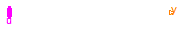
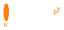
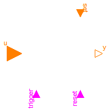

This package contains basic mathematical operations on Integer signals.
Extends from Modelica.Icons.Package (Icon for standard packages).
| Name | Description |
|---|---|
| MultiSwitch | Set Integer expression that is associated with the first active input signal |
| Sum | Sum of Integers: y = k[1]*u[1] + k[2]*u[2] + ... + k[n]*u[n] |
| Product | Product of Integer: y = u[1]*u[2]* ... *u[n] |
| TriggeredAdd | Add input to previous value of output, if rising edge of trigger port |

This block has a vector of Boolean input signals u[nu] and a vector of (time varying) Integer expressions expr[nu]. The output signal y is set to expr[i], if i is the first element in the input vector u that is true. If all input signals are false, y is set to parameter "y_default" or the last value is kept, if use_pre_as_default = true.
// Conceptual equation (not valid Modelica)
i = 'first element of u[:] that is true';
y = if i==0 then (if use_pre_as_default then pre(y)
else y_default)
else expr[i];
The input connector is a vector of Boolean input signals. When a connection line is drawn, the dimension of the input vector is enlarged by one and the connection is automatically connected to this new free index (thanks to the connectorSizing annotation).
The usage is demonstrated, e.g., in example Modelica.Blocks.Examples.IntegerNetwork1.
| Type | Name | Default | Description |
|---|---|---|---|
| Integer | expr[nu] | fill(0, nu) | y = if u[i] then expr[i] elseif use_pre_as_default then pre(y) else y_default |
| Integer | y_default | 0 | Default value of output y if use_pre_as_default=false, as well as pre(y) at initial time |
| Boolean | use_pre_as_default | true | = true, y holds its last value if all u[i]=false, otherwise y=y_default |
| Type | Name | Description |
|---|---|---|
| input BooleanVectorInput | u[nu] | Set y = expr[i], if u[i] = true |
| output IntegerOutput | y | Output depending on expression |
block MultiSwitch
"Set Integer expression that is associated with the first active input signal"
input Integer expr[nu]=fill(0, nu)
"y = if u[i] then expr[i] elseif use_pre_as_default then pre(y) else y_default";
parameter Integer y_default=0
"Default value of output y if use_pre_as_default=false, as well as pre(y) at initial time";
parameter Boolean use_pre_as_default=true
"= true, y holds its last value if all u[i]=false, otherwise y=y_default";
parameter Integer nu(min=0) = 0 "Number of input connections";
Modelica.Blocks.Interfaces.BooleanVectorInput u[nu]
"Set y = expr[i], if u[i] = true";
Modelica.Blocks.Interfaces.IntegerOutput y "Output depending on expression";
protected
Integer firstActiveIndex;
initial equation
pre(y) = y_default;
equation
firstActiveIndex = Modelica.Math.BooleanVectors.firstTrueIndex(
u);
y = if firstActiveIndex > 0 then expr[firstActiveIndex] else
if use_pre_as_default then pre(y) else y_default;
end MultiSwitch;

This blocks computes the scalar Integer output "y" as sum of the elements of the Integer input signal vector u:
y = k[1]*u[1] + k[2]*u[2] + ... k[N]*u[N];
The input connector is a vector of Integer input signals. When a connection line is drawn, the dimension of the input vector is enlarged by one and the connection is automatically connected to this new free index (thanks to the connectorSizing annotation).
The usage is demonstrated, e.g., in example Modelica.Blocks.Examples.IntegerNetwork1.
If no connection to the input connector "u" is present, the output is set to zero: y=0.
Extends from Modelica.Blocks.Interfaces.PartialIntegerMISO (Partial block with an IntegerVectorInput and an IntegerOutput signal).
| Type | Name | Default | Description |
|---|---|---|---|
| Integer | k[nu] | fill(1, nu) | Input gains |
| Type | Name | Description |
|---|---|---|
| input IntegerVectorInput | u[nu] | Vector of Integer input signals |
| output IntegerOutput | y | Integer output signal |
block Sum
"Sum of Integers: y = k[1]*u[1] + k[2]*u[2] + ... + k[n]*u[n]"
extends Modelica.Blocks.Interfaces.PartialIntegerMISO;
parameter Integer k[nu] = fill(1,nu) "Input gains";
equation
if size(u,1) > 0 then
y = k*u;
else
y = 0;
end if;
end Sum;
This blocks computes the scalar Integer output "y" as product of the elements of the Integer input signal vector u:
y = u[1]*u[2]* ... *u[N];
The input connector is a vector of Integer input signals. When a connection line is drawn, the dimension of the input vector is enlarged by one and the connection is automatically connected to this new free index (thanks to the connectorSizing annotation).
The usage is demonstrated, e.g., in example Modelica.Blocks.Examples.IntegerNetwork1.
If no connection to the input connector "u" is present, the output is set to zero: y=0.
Extends from Modelica.Blocks.Interfaces.PartialIntegerMISO (Partial block with an IntegerVectorInput and an IntegerOutput signal).
| Type | Name | Description |
|---|---|---|
| input IntegerVectorInput | u[nu] | Vector of Integer input signals |
| output IntegerOutput | y | Integer output signal |
block Product "Product of Integer: y = u[1]*u[2]* ... *u[n]"
extends Modelica.Blocks.Interfaces.PartialIntegerMISO;
equation
if size(u,1) > 0 then
y = product(u);
else
y = 0;
end if;
end Product;

Add input to previous value of output, if rising edge of trigger port
This block has one Integer input "u", one Boolean input "trigger", an optional Boolean input "reset", an optional Integer input "set", and an Integer output "y". The optional inputs can be activated with the "use_reset" and "use_set" flags, respectively.
The input "u" is added to the previous value of the output "y" if the "trigger" port has a rising edge. At the start of the simulation "y = y_start".
If the "reset" port is enabled, then the output "y" is reset to "set" or to "y_start" (if the "set" port is not enabled), whenever the "reset" port has a rising edge.
The usage is demonstrated, e.g., in example Modelica.Blocks.Examples.IntegerNetwork1.
Extends from Modelica.Blocks.Interfaces.PartialIntegerSISO (Partial block with a IntegerInput and an IntegerOutput signal).
| Type | Name | Default | Description |
|---|---|---|---|
| Boolean | use_reset | false | =true, if reset port enabled |
| Boolean | use_set | false | =true, if set port enabled and used as default value when reset |
| Integer | y_start | 0 | Initial and reset value of y if set port is not used |
| Type | Name | Description |
|---|---|---|
| input IntegerInput | u | Integer input signal |
| output IntegerOutput | y | Integer output signal |
| input BooleanInput | trigger | |
| input BooleanInput | reset | |
| input IntegerInput | set |
block TriggeredAdd
"Add input to previous value of output, if rising edge of trigger port"
extends Modelica.Blocks.Interfaces.PartialIntegerSISO;
parameter Boolean use_reset = false "=true, if reset port enabled";
parameter Boolean use_set = false
"=true, if set port enabled and used as default value when reset";
parameter Integer y_start = 0
"Initial and reset value of y if set port is not used";
Modelica.Blocks.Interfaces.BooleanInput trigger;
Modelica.Blocks.Interfaces.BooleanInput reset if use_reset;
Modelica.Blocks.Interfaces.IntegerInput set if use_set;
protected
Modelica.Blocks.Interfaces.BooleanOutput local_reset;
Modelica.Blocks.Interfaces.IntegerOutput local_set;
initial equation
pre(y) = y_start;
equation
if use_reset then
connect(reset, local_reset);
if use_set then
connect(set, local_set);
else
local_set = y_start;
end if;
else
local_reset = false;
local_set = 0;
end if;
when {trigger, local_reset} then
y = if local_reset then local_set else pre(y) + u;
end when;
end TriggeredAdd;